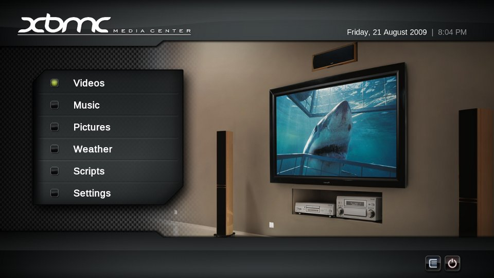

Raspberry Pi
 Image Source: http://arstechnica.com/information-tech...
Image Source: http://arstechnica.com/information-tech...
Que?
The Raspberry Pi is a credit-card sized computer that plugs into your TV and a keyboard. It’s a capable little PC which can be used for many of the things that your desktop PC does, like spreadsheets, word-processing and games. It also plays high-definition video. We want to see it being used by kids all over the world to learn programming.http://www.raspberrypi.org/faqs
Specs
- Broadcom BCM2835 SoC
- CPU: 700 Mhz AMR11
- GPU: OpenGL ES 2.0, 1080p H.264 encode/decode
- 1 Composite Video, 1 HDMI
- GPIO, SPI, I2C, I2S, UART
- Size of a credit card!
Model A ($25)
- 256 MiB RAM
- 1 USB
- No Networking
Model B ($35)
- 512 MiB RAM
- 2 USB, Integrated USB Hub
- 10/100 Wired Ethernet
OS
Official from raspberrypi.org- Raspbian Wheezy: Debian optimized for Raspberry Pi raspbian.org
- "Soft Float" raspbian wheezy available if you
needwant to run Java - Arch ARM, RISC OS
- Adafruit Occidentallis: Raspbian + support for GPIO, I2C, etc
- RaspBMC: XBMC port
Getting Started
Buy
"Official" Distributors
Other Options
- Raspberry Pi
- Power Supply: 5v 1A wall wort
- USB A -> USB B Micro
- SD Card: 4 Gb Class 4
- SD Card Reader
- Powered USB Hub (verified hubs)
- USB WiFi (verified cards)
- USB Keyboard & Mouse
- RCA or HDMI Cable (HDMI -> DVI)
- 3.5mm Audio -> RCA Adapter
- IR Remote? Web Cam? Etc.
- Breadboard, ICs, resistors, LEDs, wire, switches, sensors, etc
Install (Setup Guides)
- Fedora ARM Installer
- BerryBoot Installer
- Win32DiskImager
- RPi-sd card builder (Mac)
- RaspBMC UI Installer
~ $ wget http://downloads.raspberrypi.org/images/raspbian/2012-12-16-wheezy-raspbian/2012-12-16-wheezy-raspbian.zip
~ $ unzip ~/2012-12-16-wheezy-raspbian.zip
~ $ umount /dev/sdd1
~ $ dd bs=4M if=~/2012-12-16-wheezy-raspbian.img of=/dev/sdd
~ $ sudo syncConfigure
- First run of raspbian and raspbmc setup guides; Timezone, locale, keyboard, resolution, overclock, etc
- /boot/config.txt (Docs)
Gotchas
- No HDMI output:
hdmi_safe=1 - No WiFi
- Check hardware support
- Download drivers (links available at above link)
- Install and configure everything on CLI
Now What?
GPIO
RaspBMC
 http://www.raspbmc.comDemo
An award-winning [FOSS] (GPL) software media player and entertainment hub for digital media. It has been designed to be the perfect companion for your HTPC. Play popular audio and video formats, stream your multimedia from anywhere. Play CDs and DVDs from disk or image file. Scan your media and create a library with box covers, descriptions, and fanart. There are playlist and slideshow functions, a weather forecast feature and many audio visualizations.